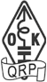

Czech Club for QRP enthusiasts.
QUOTE from the web site
The aim of the Club is to spread Ham Spirit, to make friendship with other amateurs and exchange technical and operational experience in the field of low power communication (QRP). Using of QRP helps reducing QRM on the bands, enables beginners to get on the air with simple gear and helps improving operational and technical skills.
Membership is open to any radio amateur worldwide. Application for membership should be send to OK1CZ or to OK1DCP giving the name, call and info on used rig and amateur radio interests.
The annual subscription is 10EUR.
Club members can use the club services, receive the club quarterly bulletin OK-QRP INFO and use the club name and logo on their correspondence and QSL cards.
UNQUOTE